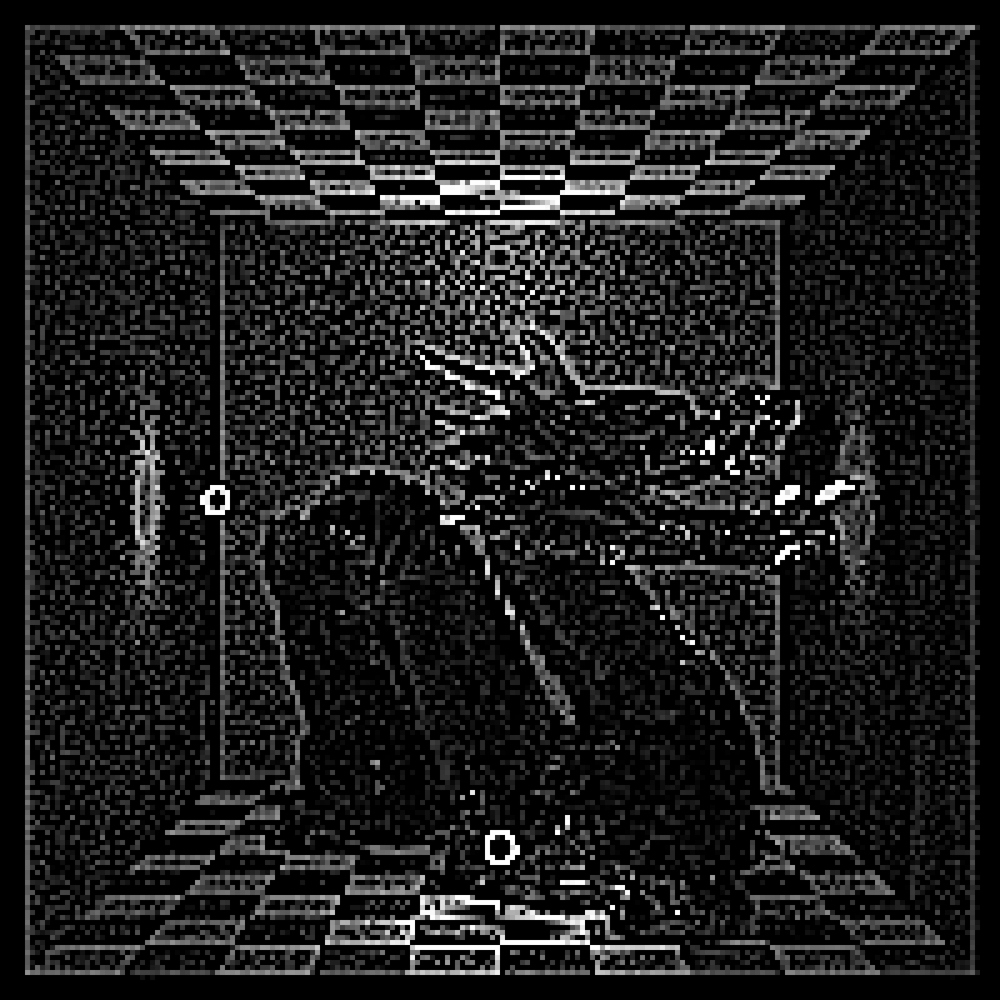
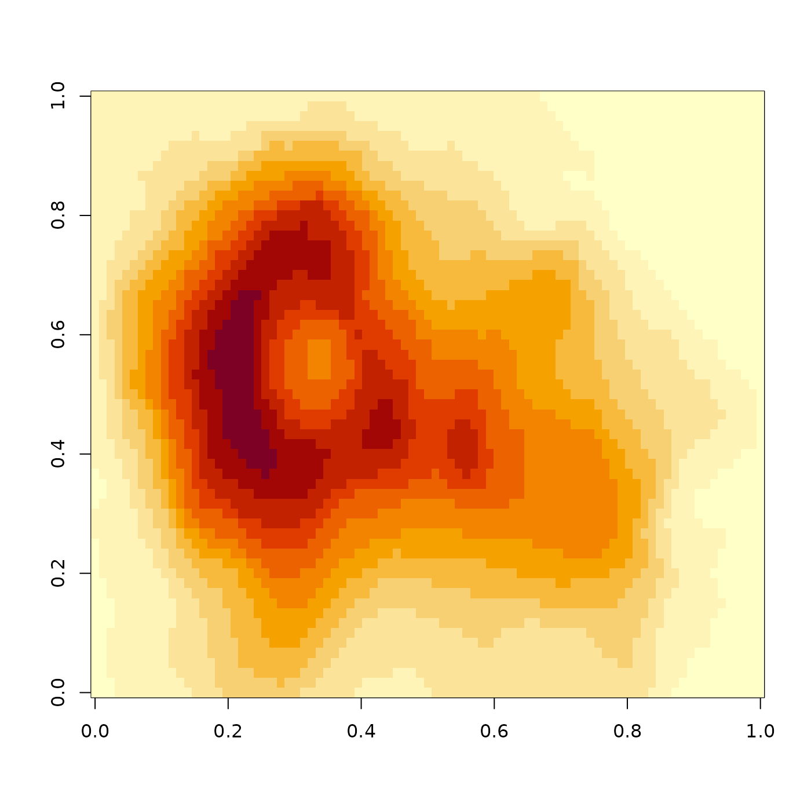
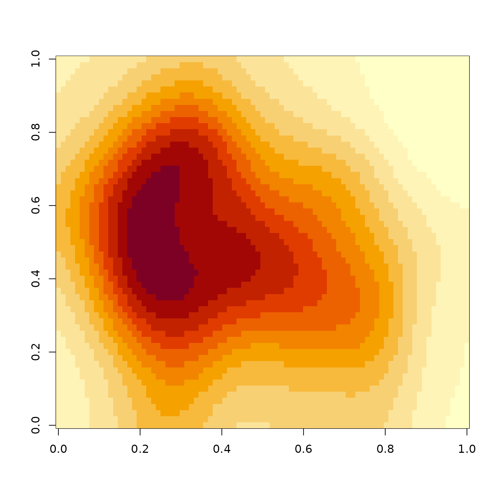

Takes an image and applys a convolution operation to it, using a user-supplied or built-in kernel. Edges are calculated by limiting the size of the kernel to only that overlapping the actual image (renormalizing the kernel for the edges).
render_convolution( image, kernel = "gaussian", kernel_dim = 11, kernel_extent = 3, absolute = TRUE, min_value = NULL, filename = NULL, preview = FALSE, gamma_correction = FALSE, progress = FALSE )
Arguments
| image | Image filename or 3-layer RGB array. |
|---|---|
| kernel | Default |
| kernel_dim | Default |
| kernel_extent | Default |
| absolute | Default |
| min_value | Default |
| filename | Default |
| preview | Default |
| gamma_correction | Default |
| progress | Default |
Value
3-layer RGB array of the processed image.
Examples
#Perform a convolution with the default gaussian kernel render_convolution(dragon, preview = TRUE)#Increase the width of the kernel # \donttest{ render_convolution(dragon, kernel = 2, kernel_dim=21,kernel_extent=6, preview = TRUE)# } #Perform edge detection using a edge detection kernel # \donttest{ edge = matrix(c(-1,-1,-1,-1,8,-1,-1,-1,-1),3,3) render_convolution(dragon, kernel = edge, preview = TRUE, absolute=FALSE)# } #Perform edge detection with Sobel matrices # \donttest{ sobel1 = matrix(c(1,2,1,0,0,0,-1,-2,-1),3,3) sobel2 = matrix(c(1,2,1,0,0,0,-1,-2,-1),3,3,byrow=TRUE) sob1 = render_convolution(dragon, kernel = sobel1) sob2 = render_convolution(dragon, kernel = sobel2) sob_all = sob1 + sob2 plot_image(sob_all)# } #Only perform the convolution on bright pixels (bloom) # \donttest{ render_convolution(dragon, kernel = 5, kernel_dim=24, kernel_extent=24, min_value=1, preview = TRUE)# } #Use a built-in kernel: # \donttest{ render_convolution(dragon, kernel = generate_2d_exponential(falloff=2, dim=31, width=21), preview = TRUE)# } #Use a custom kernel (in this case, an X shape): custom = diag(10) + (diag(10)[,10:1]) # \donttest{ plot_image(custom)render_convolution(dragon, kernel = custom, preview = TRUE)# } #end}